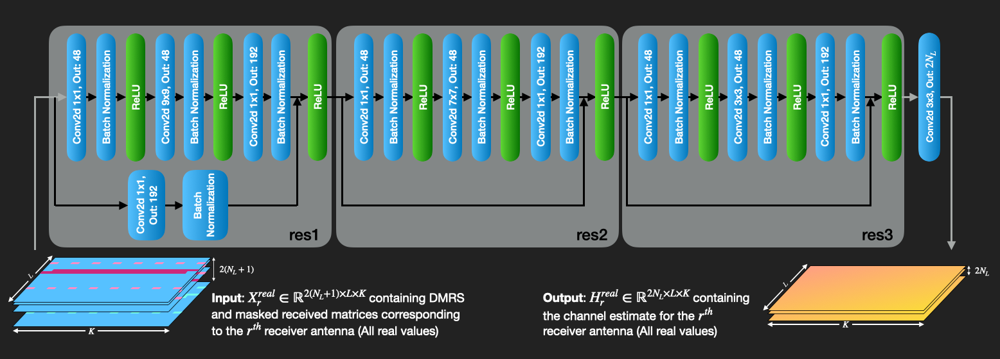

Training a ResNet Model for Channel Estimation
Now that we have a channel-estimation dataset, we can train a neural network to estimate the effective channel from the transmitted DMRS symbols and their corresponding received values. The model takes one receive antenna at a time as input and predicts the effective channel for that receive antenna.
This notebook uses the PyTorch framework, but the same dataset can also be used with other machine-learning tools. The following diagram shows the neural-network structure used in this example.

The architecture is intentionally small and fixed to the tensor dimensions generated in the previous notebook. This keeps the tutorial focused on the complete channel-estimation workflow rather than on model-design details. In a more general implementation, the number of input channels, output channels, OFDM symbols, and subcarriers could be derived from the dataset metadata or from the NeoRadium configuration.
Let’s start by importing the required modules.
[1]:
import numpy as np
import time, datetime
import torch
from torch import nn
from torch.optim.lr_scheduler import ExponentialLR
Loading the Dataset
We first load the dataset files generated in the previous step. Then we create separate PyTorch datasets for training, validation, and testing.
Each sample contains the real and imaginary parts of the transmitted DMRS layers and the received DMRS observations for one receive antenna. Each label contains the real and imaginary parts of the corresponding effective channel.
[2]:
# Define the dataset object
# ----------------------------------------------------------------------------------------------------------------------
class ChEstDataset():
# ------------------------------------------------------------------------------------------------------------------
def __init__(self, dataFile, batchSize=64):
self.batchSize = batchSize
sampleAndLabels = np.load(dataFile)
x = sampleAndLabels.shape[1]//2+1
self.samples, self.labels = sampleAndLabels[:,:x,:,:], sampleAndLabels[:,x:,:,:]
self.numSamples = self.samples.shape[0]
# ------------------------------------------------------------------------------------------------------------------
def batches(self, device=None, shuffle=False):
numBatches = self.numSamples//self.batchSize
if numBatches*self.batchSize < self.numSamples: numBatches += 1
sampleOrder = np.arange(self.numSamples)
if shuffle: np.random.shuffle(sampleOrder)
for batch in range(numBatches):
batchIndexes = sampleOrder[batch*self.batchSize : (batch+1)*self.batchSize]
batchSamples, batchLabels = ( torch.from_numpy(self.samples[batchIndexes]),
torch.from_numpy(self.labels[batchIndexes]) )
if device is not None:
batchSamples, batchLabels = batchSamples.to(device), batchLabels.to(device)
yield batchSamples, batchLabels
# Instantiate the training, validation, and test datasets
trainDs = ChEstDataset("ChestTrain.npy")
validDs = ChEstDataset("ChestValid.npy")
testDs = ChEstDataset("ChestTest.npy")
print(f"{trainDs.numSamples} training samples")
print(f"{validDs.numSamples} validation samples")
print(f"{testDs.numSamples} test samples")
14000 training samples
2000 validation samples
4000 test samples
Creating the Model
Next, we create the model that will be used for training. We first define the ResBlock module shown in the diagram above. The block uses convolution, batch normalization, ReLU activations, and a residual connection.
We then define the channel-estimation network (ChEstNet) using two ResBlock instances followed by one additional convolutional layer. The final layer maps the learned features to the real and imaginary parts of the predicted effective channel.
[3]:
# ----------------------------------------------------------------------------------------------------------------------
# Define the residual block
class ResBlock(nn.Module):
# ------------------------------------------------------------------------------------------------------------------
def __init__(self, inDepth, midDepth, outDepth, kernel=(3,3), stride=(1,1)):
super().__init__()
if isinstance(stride, int): stride = (stride, stride)
if isinstance(kernel, int): kernel = (kernel, kernel)
self.path1 = nn.Sequential(
nn.Conv2d(inDepth, midDepth, 1, stride, padding='valid'), # 1x1 conv.
nn.BatchNorm2d(midDepth),
nn.ReLU(True),
nn.Conv2d(midDepth, midDepth, kernel, padding='same'),
nn.BatchNorm2d(midDepth),
nn.ReLU(True),
nn.Conv2d(midDepth, outDepth, 1, padding='valid'), # 1x1 conv.
nn.BatchNorm2d(outDepth))
self.path2 = None
if ((stride != (1,1)) or (inDepth!=outDepth)):
self.path2 = nn.Sequential(nn.Conv2d(inDepth, outDepth, 1, stride), # 1x1 conv.
nn.BatchNorm2d(outDepth) )
# ------------------------------------------------------------------------------------------------------------------
def forward(self, x):
out = (self.path1(x) + x) if self.path2 is None else (self.path1(x) + self.path2(x))
out = nn.ReLU(True)(out)
return out
# ----------------------------------------------------------------------------------------------------------------------
# Define the ChEstNet model
class ChEstNet(nn.Module):
# ------------------------------------------------------------------------------------------------------------------
def __init__(self, device):
super().__init__()
self.inShape = (6, 14, 288)
self.res1 = ResBlock(6, 48, 192, (9,9)) # Residual block with a 9×9 kernel
self.res2 = ResBlock(192, 48, 192, (7,7)) # Residual block with a 7×7 kernel
self.res3 = ResBlock(192, 48, 192, (3,3)) # Residual block with a 3x3 kernel
self.conv = nn.Conv2d(192, 4, 3, padding='same')
self.to(device)
# ------------------------------------------------------------------------------------------------------------------
def forward(self, x):
out = self.res1(x)
out = self.res2(out)
out = self.res3(out)
out = self.conv(out)
return out
# ------------------------------------------------------------------------------------------------------------------
@property
def numParams(self): return sum( p.numel() for p in self.parameters())
@property
def device(self): return next(self.parameters()).device
# ------------------------------------------------------------------------------------------------------------------
def trainEpoch(self, trainDS, lossFunction, optimizer):
self.train() # Set the model to training mode
lossMin, lossSum, lossMax = torch.inf, 0, -torch.inf
n = 0
for batchSamples, batchLabels in trainDS.batches(self.device, shuffle=True):
# Compute prediction and loss
batchPredictions = self( batchSamples )
loss = lossFunction(batchPredictions, batchLabels)
optimizer.zero_grad()
loss.backward() # Backpropagation
optimizer.step()
lossValue = loss.item()
batchSize = batchSamples.shape[0]
lossSum += lossValue * batchSize
if lossValue>lossMax: lossMax = lossValue
if lossValue<lossMin: lossMin = lossValue
n += batchSamples.shape[0]
return lossMin, lossSum/n, lossMax
# ------------------------------------------------------------------------------------------------------------------
# Evaluation loop:
def evaluate(self, evalDS, lossFunction):
self.eval() # Set the model to evaluation mode
lossSum, n = 0, 0
with torch.no_grad():
for batchSamples, batchLabels in evalDS.batches(self.device):
batchSize = batchSamples.shape[0]
batchPredictions = self( batchSamples ).to(batchLabels.dtype)
# Accumulate the loss for the whole batch
batchLoss = lossFunction(batchPredictions, batchLabels).item() * batchSize
lossSum += batchLoss
n += batchSize
return lossSum/n
# ------------------------------------------------------------------------------------------------------------------
def infer(self, samples, toNumpy=True):
self.eval() # Set the model to evaluation mode
if type(samples) is np.ndarray: samples = torch.from_numpy(samples)
with torch.no_grad():
if toNumpy: return self(samples.to(self.device)).cpu().numpy()
return self(samples.to(self.device))
# ------------------------------------------------------------------------------------------------------------------
def saveParams(self, fileName):
torch.save(self.state_dict(), fileName)
# ------------------------------------------------------------------------------------------------------------------
def loadParams(self, fileName):
if type(fileName)==str:
self.load_state_dict( torch.load(fileName, weights_only=True, map_location=self.device) )
else:
self.load_state_dict(fileName)
Training the Model
The following cell defines the training and validation loops and uses them to train the model. The validation loss is monitored during training, and the model parameters with the lowest validation loss are saved for later evaluation.
Note: The following cell can take several hours to complete, depending on the hardware. A file containing trained model parameters is included in this directory, so you can skip the training cell and proceed to the evaluation step if you only want to run the demonstration.
The training run is not configured for strict bit-exact reproducibility. Different runs may produce slightly different weights, but the overall model performance should remain similar when trained with the same dataset and architecture.
[4]:
numEpochs = 100 # Number of epochs
learningRate = (0.002, 0.00002) # Learning rate starts at 0.002 and exponentially decays to 0.00002
# Check GPU availability
device = "cuda" if torch.cuda.is_available() else "mps" if torch.backends.mps.is_available() else "cpu"
print(f"Using {device} device")
model = ChEstNet(device)
lossFunction = nn.MSELoss() # Use MSE as the loss function
if isinstance(learningRate,tuple): # If learningRate is a tuple, use an exponentially decaying learning rate
from torch.optim.lr_scheduler import ExponentialLR
lr1st, lrLast = learningRate
optimizer = torch.optim.Adam(model.parameters(), lr=lr1st)
lrScheduler = ExponentialLR(optimizer, np.exp(np.log(lrLast/lr1st)/(numEpochs-1)))
else: # If learningRate is a number, use a fixed learning rate
optimizer = torch.optim.Adam(model.parameters(), lr=learningRate)
lrScheduler = None # No learning-rate scheduling is needed
t0 = time.monotonic()
print("Epoch Learning Rate Training Loss Validation Loss")
print("----- ------------- ------------- ---------------")
lowestLoss = None
for epoch in range(numEpochs):
print(" %-4d %-10f "%(epoch+1, lrScheduler.get_last_lr()[0]), end="")
lossMin, lossMean, lossMax = model.trainEpoch(trainDs, lossFunction, optimizer)
print("%-10f "%(lossMean), end="")
validLoss = model.evaluate(validDs, lossFunction)
if lowestLoss is None:
lowestLoss = validLoss
torch.save(model.state_dict(), 'Models/ChEstModelWeights.pth')
print("%-10f "%(validLoss))
elif validLoss<lowestLoss: # This is the best model so far, so save it
lowestLoss, bestEpoch = validLoss, epoch+1
torch.save(model.state_dict(), 'Models/ChEstModelWeights.pth')
print("%-10f * "%(validLoss)) # The '*' indicates the best model so far and that it was saved
else:
print("%-10f "%(validLoss))
if lrScheduler is not None: lrScheduler.step()
print(f"Training complete. (Training time: {str(datetime.timedelta(seconds=int(time.monotonic()-t0)))})")
Using cuda device
Epoch Learning Rate Training Loss Validation Loss
----- ------------- ------------- ---------------
1 0.002000 0.938700 0.299167
2 0.001909 0.369134 0.404431
3 0.001822 0.319097 0.312149
4 0.001739 0.302045 0.412153
5 0.001660 0.271935 0.202254 *
6 0.001585 0.256703 0.251782
7 0.001513 0.249186 0.239740
8 0.001444 0.225596 0.250165
9 0.001379 0.218456 0.199255 *
10 0.001316 0.220275 0.196553 *
11 0.001256 0.216713 0.215160
12 0.001199 0.199733 0.175139 *
13 0.001144 0.198662 0.152383 *
14 0.001092 0.191724 0.162259
15 0.001043 0.183435 0.153435
16 0.000995 0.175529 0.159840
17 0.000950 0.173251 0.141395 *
18 0.000907 0.169715 0.158897
19 0.000866 0.164087 0.151752
20 0.000826 0.162592 0.157471
21 0.000789 0.159753 0.147347
22 0.000753 0.155921 0.133097 *
23 0.000719 0.154368 0.144307
24 0.000686 0.152605 0.134776
25 0.000655 0.149900 0.137753
26 0.000625 0.146861 0.149590
27 0.000597 0.143483 0.131100 *
28 0.000570 0.146480 0.130053 *
29 0.000544 0.140951 0.137649
30 0.000519 0.140800 0.130080
31 0.000495 0.136195 0.126247 *
32 0.000473 0.136997 0.130804
33 0.000451 0.136491 0.123413 *
34 0.000431 0.134396 0.119934 *
35 0.000411 0.134705 0.121562
36 0.000393 0.131477 0.121920
37 0.000375 0.131144 0.126812
38 0.000358 0.129563 0.129650
39 0.000341 0.128330 0.121826
40 0.000326 0.128159 0.123329
41 0.000311 0.126385 0.118147 *
42 0.000297 0.126128 0.118586
43 0.000283 0.125762 0.120828
44 0.000271 0.125648 0.118195
45 0.000258 0.124230 0.117378 *
46 0.000247 0.122944 0.116941 *
47 0.000235 0.124195 0.117355
48 0.000225 0.122100 0.117292
49 0.000214 0.121046 0.114693 *
50 0.000205 0.121399 0.117613
51 0.000195 0.120147 0.117187
52 0.000187 0.119608 0.114770
53 0.000178 0.118788 0.115535
54 0.000170 0.120268 0.115052
55 0.000162 0.118124 0.114397 *
56 0.000155 0.117903 0.114606
57 0.000148 0.117129 0.114472
58 0.000141 0.117004 0.113578 *
59 0.000135 0.115900 0.116340
60 0.000129 0.116098 0.113596
61 0.000123 0.116178 0.114125
62 0.000117 0.116031 0.113689
63 0.000112 0.116244 0.114568
64 0.000107 0.115590 0.114396
65 0.000102 0.114377 0.112989 *
66 0.000097 0.114781 0.112893 *
67 0.000093 0.114189 0.113360
68 0.000089 0.113873 0.112096 *
69 0.000085 0.113713 0.112275
70 0.000081 0.114048 0.112231
71 0.000077 0.113120 0.113692
72 0.000074 0.113684 0.112383
73 0.000070 0.113008 0.112376
74 0.000067 0.113242 0.112588
75 0.000064 0.112798 0.111806 *
76 0.000061 0.112153 0.111362 *
77 0.000058 0.112353 0.112119
78 0.000056 0.111996 0.111579
79 0.000053 0.112043 0.111400
80 0.000051 0.112224 0.111796
81 0.000048 0.111636 0.110985 *
82 0.000046 0.111911 0.111708
83 0.000044 0.111451 0.111613
84 0.000042 0.111480 0.111347
85 0.000040 0.111761 0.111579
86 0.000038 0.111149 0.111516
87 0.000037 0.111740 0.111231
88 0.000035 0.110919 0.110838 *
89 0.000033 0.110736 0.110849
90 0.000032 0.110981 0.111226
91 0.000030 0.110846 0.111002
92 0.000029 0.111162 0.110930
93 0.000028 0.110887 0.110852
94 0.000026 0.110676 0.111018
95 0.000025 0.111028 0.110817 *
96 0.000024 0.110587 0.110395 *
97 0.000023 0.110451 0.110731
98 0.000022 0.109942 0.110553
99 0.000021 0.110439 0.110860
100 0.000020 0.110155 0.110743
Training complete. (Training time: 0:39:13)
Evaluating the Model on the Test Dataset
After training, we evaluate the saved model on the held-out test dataset. This provides a dataset-level error metric that is independent of the later link-level BER simulation.
A convenient metric for channel estimation is mean squared error (MSE), because it measures the channel-estimation error relative to the power of the true channel. The BER evaluation in the next notebook is still the main end-to-end performance result, but this test-set metric is useful for checking that the model generalizes beyond the training and validation datasets.
[5]:
model.loadParams('Models/ChEstModelWeights.pth') # Load the best model
testLoss = model.evaluate(testDs, lossFunction)
print(f"Test MSE loss: %.6f"%(testLoss))
Test MSE loss: 0.112375
[ ]: